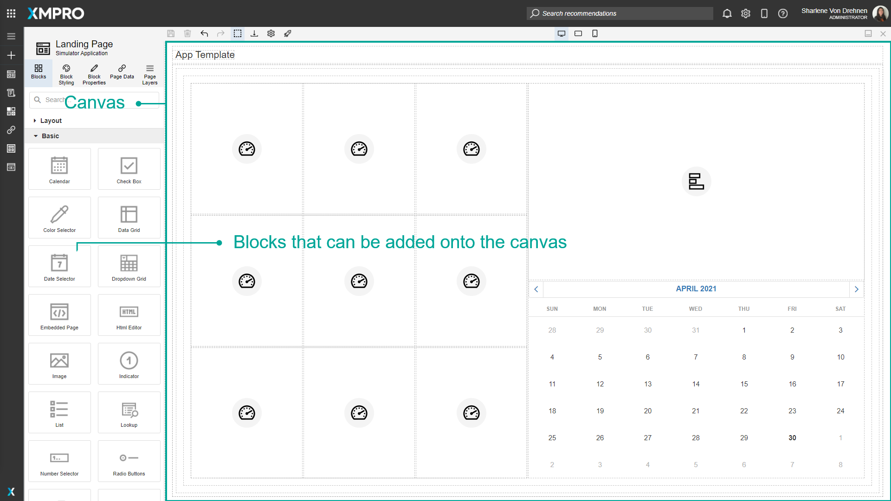
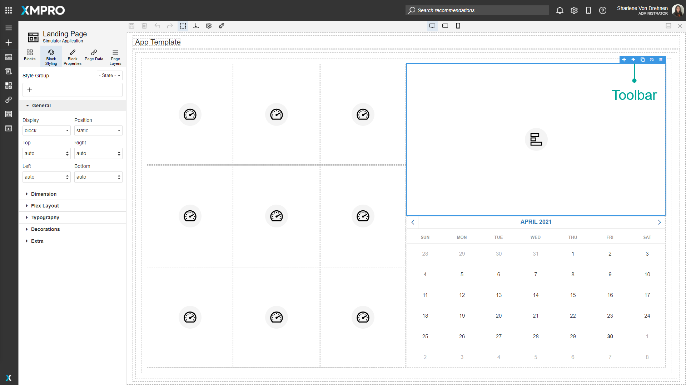
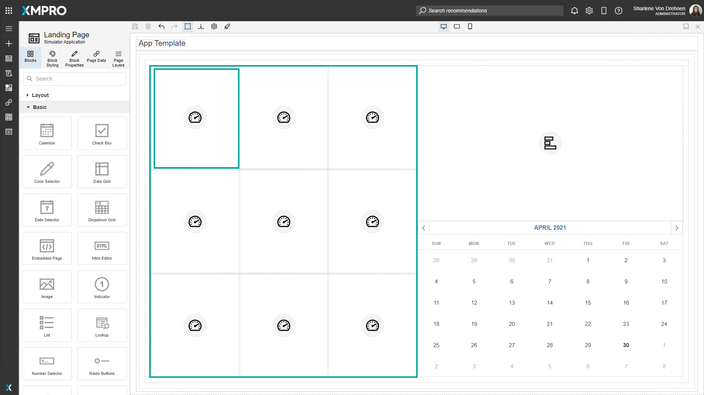
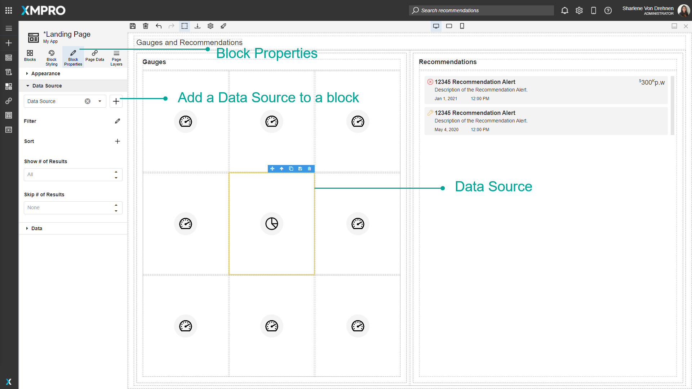

Canvas
The App Designer Canvas is a drag and drop editor for creating customized web pages. UI Blocks are elements or controls such as a textbox that can be dragged from the toolbox to anywhere on the Canvas. See the UI Blocks article for more details on UI Blocks. This is the functionality that allows anyone on your team to create and deploy applications without needing to be a programmer.
Controls such as graphs, gauges, or charts can be populated with real-time data from different systems. For example, live data from running systems or machines can be displayed directly to the user. See the Data Integration article for more details on integrating data sources into the page.
The Blocks that are added onto the Canvas are what make up the overall design of a Page for the Application. Each Page in the App has its own Canvas that can be customized, and this can be opened by going into the Application and editing the Page.

Block Toolbar
A Block is outlined in blue on the canvas when it is selected. A blue toolbar will appear on the top-right corner of the Block which will provide options to move, clone, or do other actions on the Block. Note that some of these only apply to certain elements that allow these functions.
| Action | Icon | Description |
|---|---|---|
| Move | Allows you to click and drag the Block to move it to a different location on the Canvas. You can also click and drag from anywhere on the Block itself, but the Block may be obscured by its children. | |
| Select Parent | Selects the parent of the currently selected Block. | |
| Clone | Clones the selected Block. | |
| Add | Adds a new section of the Block, for example, a new tab or column. | |
| Save As Widget | Saves the selected Block and its inner Blocks as a Widget, which allows this group to be re-used later. See the Widgets article for more details on Widgets. | |
| Delete | Deletes the Block. |

Canvas Hierarchy
Blocks are organized on the Canvas using a hierarchy. The Canvas itself is made up of Blocks nested under other Blocks, and this makes up the overall design of the Page.
When each Block is selected, it will be outlined and can help identify what part of the hierarchy it belongs to, including all of its parent Blocks and children Blocks. For example, there could a parent Block that contains multiple Blocks inside it, to form a grid of gauges containing a different value each.

The hierarchy can also be viewed as a list in the Page Layouts tab in the Toolbox. See the Page Layers article for more details on Page Layers.
Data Sources
You can connect Data Sources to blocks on the canvas by going to 'Data Source' under 'Block Properties'. This allows you to view data on the Page based on a connected Data Source. See the Data Integration article for more details on Data Sources.

Further Reading
Last modified: May 13, 2025